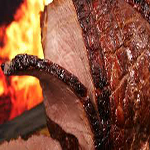
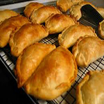
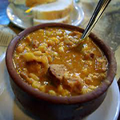

Compre uma comida Árabe e leve o refrigerante de graça.
Comidas Argentinas
Churrasco

Neste item não precisamos falar muito, as carnes argentinas ao lado das uruguais são consideradas as melhores do mundo por muita gente.
Empanada

Salgada ou doce, a empanada faz muito sucesso na Argentina. Cada região do país possui um tipo de preparo para elas, mas todas são igualmente deliciosas.
Locro

O locro é um guisado muito comum na região dos Andes, por toda a América Latina. Na Argentina, ele se popularizou por todo o país. Consiste em um prato com milho, feijão e abóbora.